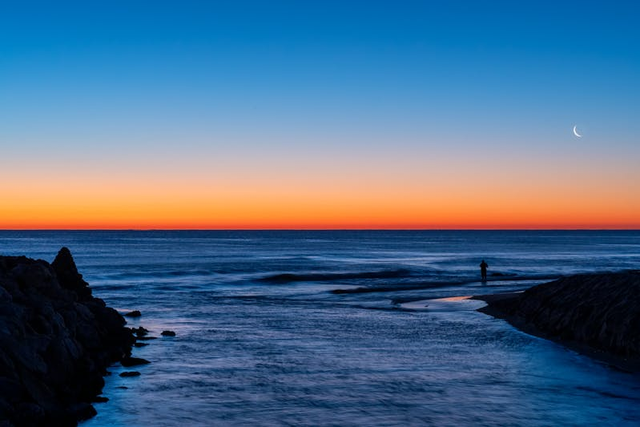

Valencia is home to stunning beaches, such as Malvarrosa and Patacona, which offer golden sands and clear waters, perfect for relaxation and water sports. As the day ends, the sunset over the Mediterranean creates breathtaking views, with the sky painted in hues of orange, pink, and purple. The calming sound of the waves and the warm evening breeze make watching the sunset on these beaches a truly memorable experience.
